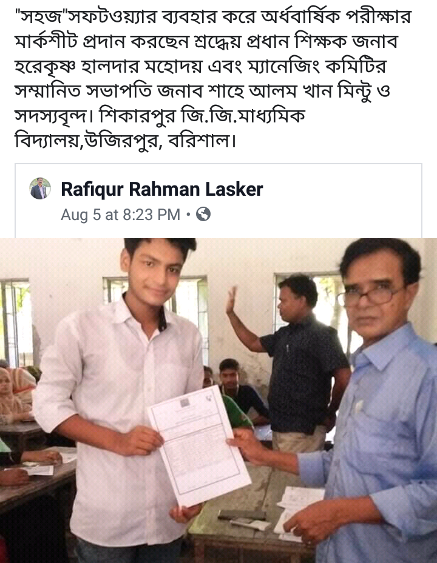
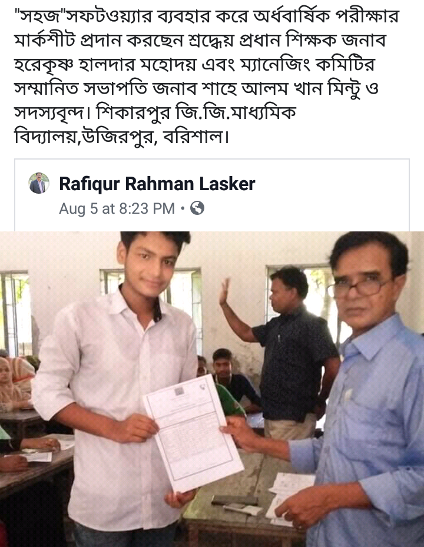

My main objective was to help the school teachers of my country.
Before diclearing any exam result they face an extreme work pressure.So I develop Sohoz.
The outcome was excellent.Thanks to everyone who releted with Sohoz.
Since 2017 to 2020 before Covid 19 pandemic
Different schools use Sohoz with greate satisfaction.
Happy and delightful expression from The users of sohoz. means a lot to us.
Reduces time and cost. Upgrade standerd of living .
Trained camera with Ai , Open CV, Computer vision (python library) will detect flame and fire .
Instantly it send a signal to the microcontroller ,
and getting the signal from camera our device will automatically send
alarm, SMS, to fire station, start the water pump and deliver water to the fire .
Same functionalities like a household fire and flame detector.
The only change is replace the flame sensor with a long range trained camera .
Mounted on the top of a tower. long range trained camera will ensure more area coverage.
How it works :
There are several options.
Option one:-
Mount the camera on a tower or we set a network of small cameras inside the bushes.
As the camera detect flame or fire it will send signal to us.
And we will send the signal to nearest fire station. In exchange we get a service charge from the government.
Option two:-
Lets upgrade the forest fire protection department. Set up camera throughout the forest .
Set up a unit combined with a deep tube well , a pump house, with staff residential cabin, with water dispensing vehicle ,
this unit can cover the area within 30 kilometer radius. After every 50 KM one unit set up will be installed.
24h/365 d monitor with trained person with trained camera.
Fire department will build all infrastructures. We only provide technical support.
In exchange of a certain revenue, which must be value driven .
We can re use same python code with thousands of cameras.
But when we claim total bill, we count the total no of cameras each camera with fixed rate .
As this is a business model that’s why we are discussing it.
Option three:-
We can provide all support ,from tower installation and camera set up to pump house automation .
Field staff recruit ,training, as a package.
As a pilot project we will cover 10*10 =100 sq km areas under one pump house and camera surveillance unit.
After observing the result of the trial with demo fire set up. We will get the result instantly.
Then like copy and pest we spread the units throughout the whole forest.
Let’s dive deep in to the
proposed business model.
Who are our Key Partners?
The Government ,
The fire department,
The Investor finding agency,
The Investor,
Soft Ray-The Idea generator.
Who are our key suppliers?
One time supply:
Drilling equipment and tower installing unit of our company, Python programmers, Hardware suppliers :ie camera, Laptop, Raspbery PI,
Arduino, Batteries, IPS ,Other items.
Civil engineering firm for the construction of pump house with residence quarter.
Maintenance and supervision : Soft Ray and investor joint venture.
Which Key Resources are we
acquiring from partners?
The Investor finding agency or the investor will communicate with
The Government ,
The fire department.
Which Key Activities do
partners perform?
Get approval from the government. So that we can start our project.
MOTIVATIONS FOR PARTNERSHIPS:
Optimization and economy: Save soil startup will be
One of its kind in this planet.
This will be a billion dollar project. Which will save billion dollars each year .
Which will be a milestone to the human civilization.
Stop spread of wild fire .
Protect the human civilization protect the top soil.
MOTIVATIONS FOR
PARTNERSHIPS:
Reduction of risk and uncertainty:
After finishing the set up of one unit pilot project we can practically be able to measure the risk benefit ratio.
Considering the huge potential this investment cost for the pilot unit ,risk is very trivial.
What Key Activities do our
Value Propositions require?
Instant wild fire control is a need.We solve it instantly.
Which will stop wild fire and spreading wild fire.
Save human life, assets, Protect the damage of the top soil.
Thus ensure safety of our habitat.
Many efforts have been taken but we are using new technology.
Different from others.
The value is actually beyond the measure.
Customer Relationships?
Long lasting.
In combination with Human intellect and technology we will be able to resist a huge natural disaster.
Fire department and relevant govt ministry will monitor and evaluate the cost expense ratio at the end of every year.
Revenue streams?
How much money we will receive as
service charge per annum from
the government?
It will be determined by us after one or two successful
trial.
The charge will be dynamic.
And value driven.
CATEGORIES:
Production : Design and develop the camera with AI.
Problem Solving: Detect Fire instantly and send different types of signals
to different departments.
Platform/Network: We already have infrastructure and humans with specific skill set and inter department relations.
What value do we deliver to the customer?
Wild fire , bush fire ,forest fire, or Amazon fire whatever may be the name. The inferno is the other name of panic ,destruction ,death and lose of wealth.
Eradication of forest fire through Save Soil Startup adds enormous value to the people who have been fighting against the bushfire from decades.
Which one of our customer’s problems are we helping to solve?
Destruction ,death and lose of wealth because of Wild fire will be erased
through Save Soil Startup. This will add enormous value to the people who have been fighting against the bushfire from decades.
What bundles of products and services are we offering to each Customer Segment?
Production : The tower equipped with multiple trained cameras with AI. Ensure 360 degree surveillance.
Problem Solving: Detect Fire instantly and send different types of signals to different departments.
[ phone calls, sms, alarm bell, alarm flash light.] Start water pump and shower water to the fire.
Platform/Network: We already have infrastructure and humans with specific skill set and inter department relations.
Which customer needs are we satisfying?
Controlling wild fire is the demand of
present time .
We are offering our service by which
this crying need can be satisfied.
CHARACTERISTICS:
Newness: The brand new idea.
Performance: Accurate .Reliable.
Customization: Optional, it can be customized.
“Getting the Job Done” : Prototype is ready with microcontroller. But train the camera with computer vision is under progress.
Design: Unique of its kind.
Brand/Status: We will make the branding of soil saver.
My main objective is the wellbeing of
the humanity. If any one is interested
s/he or they can use all information
provided here for free of cost.
Only for non commercial intention.
It makes me feel sad when I
watch news regarding the destructions
due to wild fire.
If any of your thought turns into reality then definitely YOU are a cocreator.
The beauty you see here is a reflection of your good thought.Thank You.
There are many complexities behind everything in the world that are not always understood.
We should never just look at the surface, it is quite foolish to judge another without understanding.
Those who always want to pay the food bill themselves do not mean that their money is overflowing. This is because to him friendship has greater value than money.
Those who work in the first place, it means that he is not a fool, in fact he has a sense of responsibility.
Those who apologize first after a quarrel or argument are not mistaken, but rather they evaluate the people around them.
The one who wants to help you and does not expect anything from you, he is a real friend.
Just because someone texts you often doesn't mean they have no work, they actually love you with all their heart.
One day we will be separated from each other, but our behavior and love will remain in people's hearts.
Someone will remember, “This is the man I spent the best time of my life with".
We are all born with divine fire inside. We should try to add wings to this fire and fill the world with the light of its goodness.
Love to share some inspiring quotes from "The Wings Of Fire" the autobiography of A P J Abul Kalam. Ex president of India.
If you fail, never give up because FAIL means "First Attempt In Learning".
To succeed in your mission, you must have single-minded devotion to your goal.
Dream, dream, dream. Dreams transform into thoughts and thoughts result in action.
Don’t take rest after your first victory because if you fail in second, more lips are waiting to say that your first victory was just luck.
He who knows others is learned, but the wise one is the one who
knows himself. Learning without wisdom is of no use.
Don’t worry and fret, fainthearted,
The chances have just begun,
For the best jobs haven’t been started,
The best work hasn’t been done.
If you want to leave your footprints
On the sands of time
Do not drag your feet.
For all your days prepare
And meet them ever alike
When you are the anvil, bear –
When you are the hammer, strike.
The best performances are accomplished when you are relaxed and
free of doubt. Take things as they came.
Does the seagull not fly across the Sun, alone and without a
nest? You must forego your longing for the land of your memories to
move into the dwelling place of your greater desires; our love will not
bind you nor will our needs hold you.
Your children are not your children.
They are the sons
and daughters of Life’s longing for itself. They come through you but
not from you. You may give them your love but not your thoughts. For
they have their own thoughts.
“This land may be housing your body
but not your soul. Your soul dwells in the house of tomorrow which none
of us at this country can visit, not even in our dreams. May God bless
you, my child!”
To succeed in life and achieve results, you must
understand and master three mighty forces— desire, belief, and
expectation.
With faith, you can change your destiny
Desire, when it stems from the heart and spirit, when it is pure and
intense, possesses awesome electromagnetic energy. This energy is
released into the ether each night, as the mind falls into the sleep state.
Each morning it returns to the conscious state reinforced with the cosmic
currents. That which has been imaged will surely and certainly be
manifested. You can rely, young man, upon this ageless promise as surely as
you can rely upon the eternally unbroken promise of sunrise... and of
Spring.
When the student is ready, the teacher will appear—How true! Here
was the teacher to show the way to a student who had nearly gone
astray! “Accept your destiny and go ahead with your life. You are not
destined to become a Pilot. What you are destined to become
is not revealed now but it is predetermined. Forget this failure, as it was
essential to lead you to your destined path. Search, instead, for the true
purpose of your existence. Become one with yourself, my son! Surrender
yourself to the wish of God
I knew I had to create my own opportunities.
We use form submit.com to maintain email communications.Please fill in the form and leave a line to us.


 
